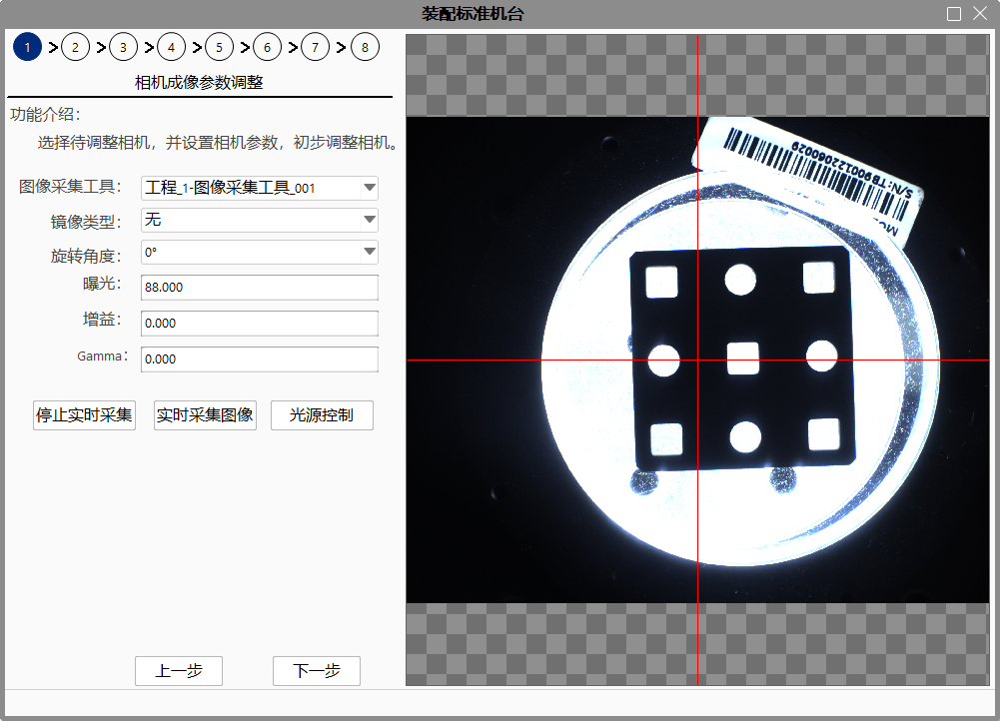
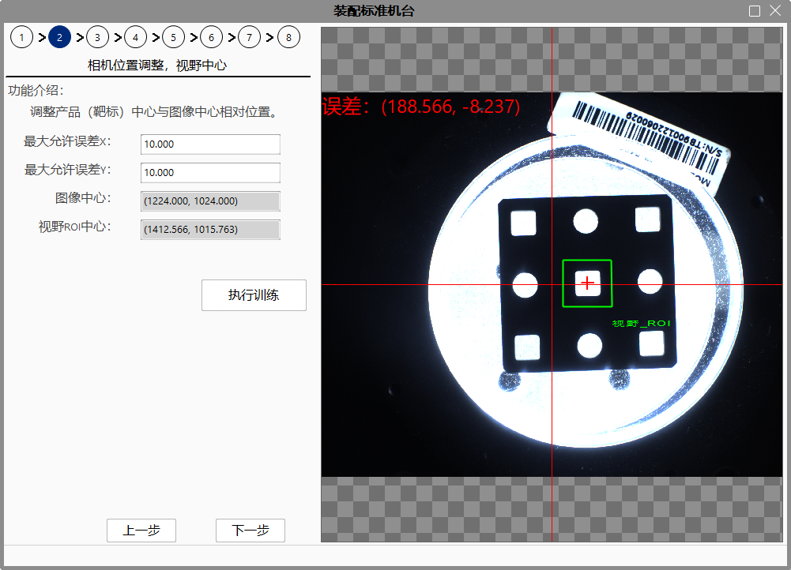
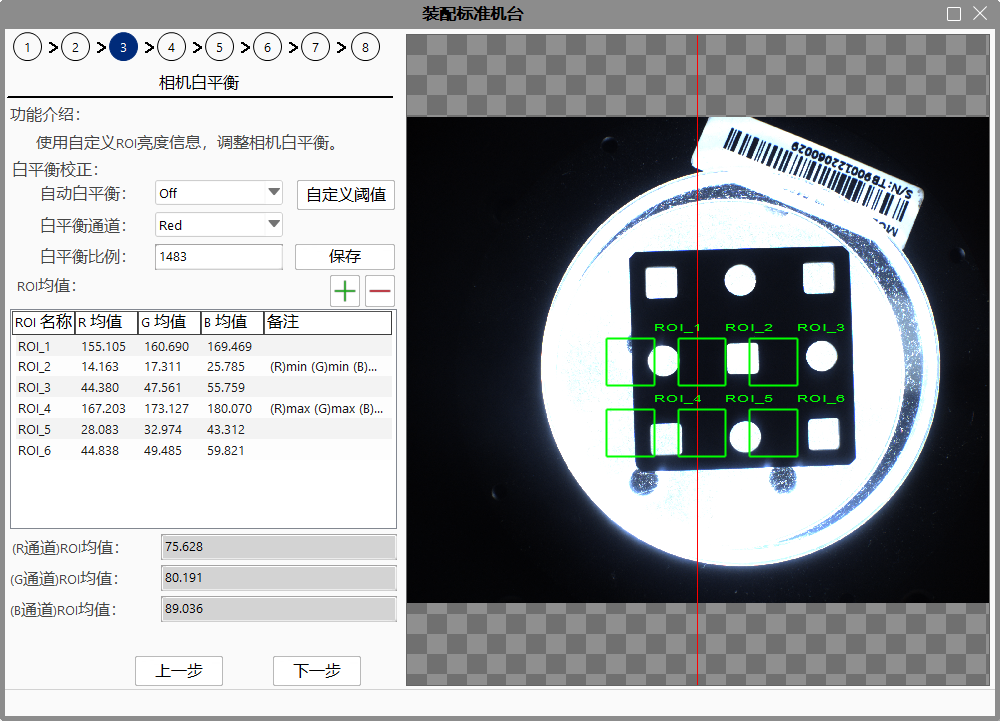
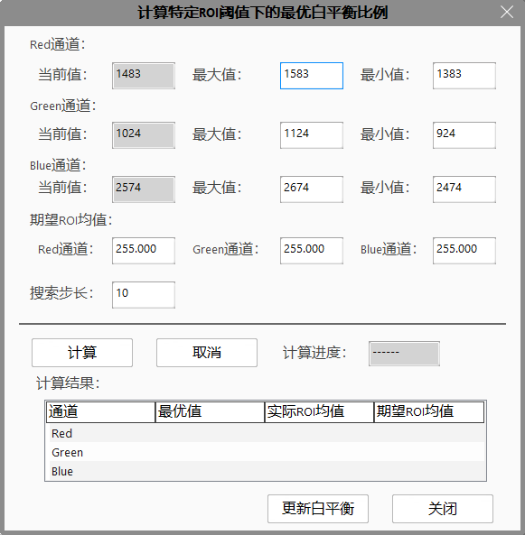
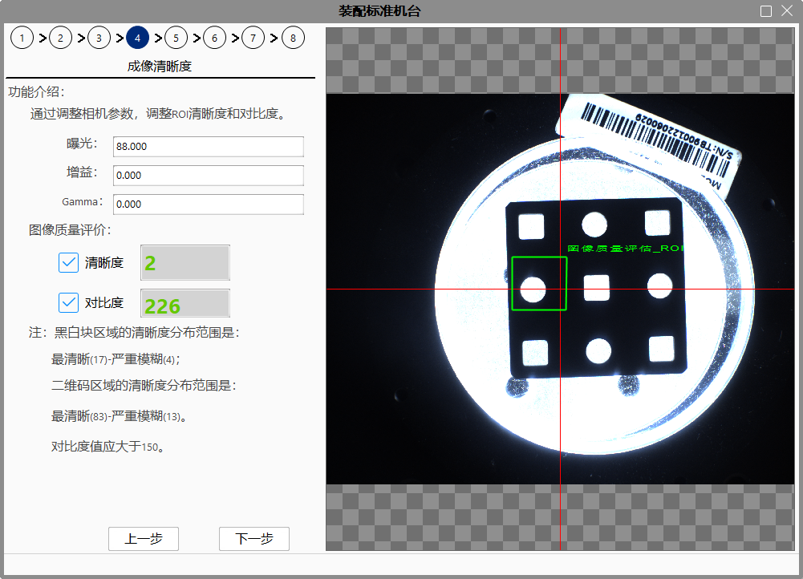
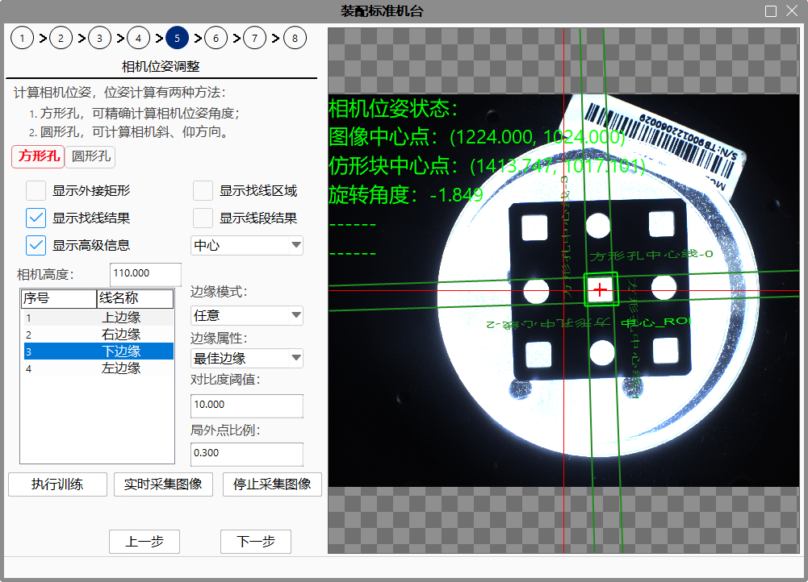
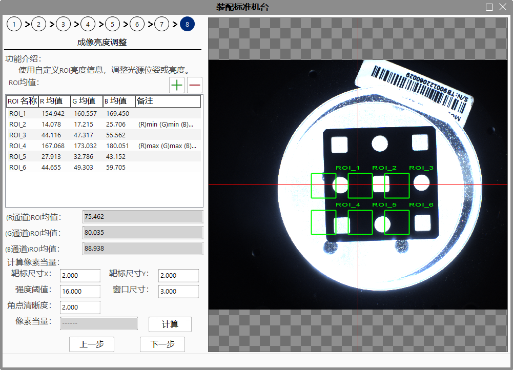
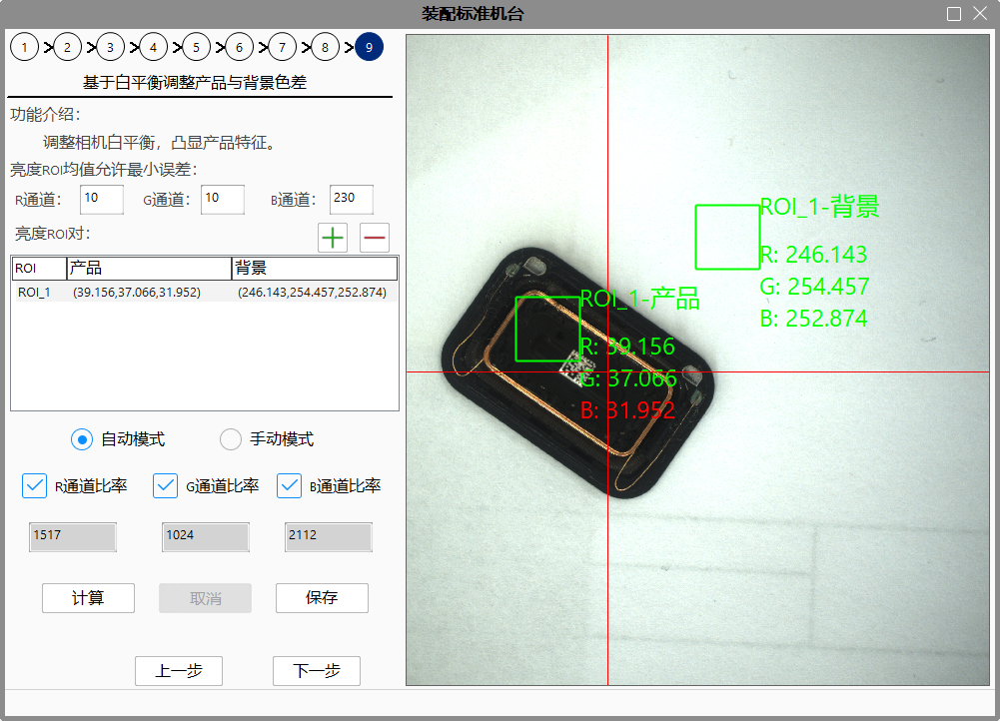

Trước khi sử dụng chức năng này, trong dự án cần có nguồn hình ảnh/công cụ thu nhận hình ảnh, và công cụ phải được liên kết với camera. Chức năng này dùng để điều chỉnh vị trí và thông số hình ảnh của camera thông qua nguồn hình ảnh/công cụ thu nhận hình ảnh.
Việc lắp đặt máy chuẩn được chia thành 8 bước, cụ thể như sau:
Bước 1: Điều chỉnh thông số hình ảnh của camera, điều chỉnh sơ bộ độ rõ nét của hình ảnh;
Bước 2: Điều chỉnh vị trí của camera, căn chỉnh trung tâm vùng nhìn, điều chỉnh vị trí tương đối giữa trung tâm sản phẩm/mục tiêu và trung tâm hình ảnh;
Bước 3: Cân bằng trắng của camera, điều chỉnh cân bằng trắng của camera;
Bước 4: Độ rõ nét của hình ảnh, điều chỉnh độ rõ nét và độ tương phản của ROI thông qua việc điều chỉnh thông số của camera;
Bước 5: Điều chỉnh tư thế camera, điều chỉnh góc nghiêng của camera, lượng hóa góc nghiêng để hướng dẫn người dùng điều chỉnh tư thế camera;
Bước 6: Cân bằng trắng của camera (tùy chọn), điều chỉnh cân bằng trắng của camera;
Bước 7: Độ rõ nét của hình ảnh, điều chỉnh độ rõ nét và độ tương phản của ROI thông qua việc điều chỉnh thông số của camera;
Bước 8: Điều chỉnh độ sáng của hình ảnh, điều chỉnh vị trí hoặc độ sáng của nguồn sáng;
Bước 9: Dựa trên cân bằng trắng để điều chỉnh độ tương phản màu giữa sản phẩm và nền, điều chỉnh cân bằng trắng của camera để làm nổi bật đặc điểm của sản phẩm.
Chức năng điều chỉnh thông số hình ảnh của camera như hình 1-1 dưới đây:

Chi tiết như sau:
Công cụ thu nhận hình ảnh Có thể chọn nguồn hình ảnh/công cụ thu nhận hình ảnh trong dự án để liên kết với camera. Hình ảnh thời gian thực từ camera này sẽ hiển thị ở vùng hình ảnh bên phải (hiện đang ở chế độ thu hình thời gian thực).
Loại phản chiếu Thực hiện thao tác phản chiếu ảnh gốc. Có 4 loại: không phản chiếu, phản chiếu ngang, phản chiếu dọc và phản chiếu cả ngang và dọc.
Góc xoay Xoay ảnh gốc ngược chiều kim đồng hồ một góc nhất định. Có 4 mức: 0 độ, 90 độ, 180 độ và 270 độ.
Phơi sáng Điều chỉnh thông số phơi sáng của camera.
Tăng cường (Gain) Điều chỉnh thông số tăng cường của camera.
Gamma Điều chỉnh thông số Gamma của camera.
Dừng thu hình thời gian thực Dừng thu nhận hình ảnh thời gian thực.
Thu hình thời gian thực Sử dụng camera và thông số hình ảnh liên kết với nguồn hình ảnh/công cụ thu nhận hình ảnh hiện tại để thu hình thời gian thực và hiển thị cập nhật liên tục trong vùng hình ảnh.
Điều khiển nguồn sáng Thực hiện công cụ gửi dữ liệu truyền thông trong dự án để bật/tắt nguồn sáng.
Chức năng điều chỉnh thông số hình ảnh camera như hình 1-2 dưới đây:

Chi tiết như sau:
Chức năng cân bằng trắng của camera như hình 1-3 dưới đây:

Chi tiết như sau: 1. Cân bằng trắng tự động Thiết lập chế độ cân bằng trắng, chỉ áp dụng cho camera màu LBAS. Các giá trị: Continuous (Liên tục), Once (Một lần), Off (Tắt). 2. Kênh cân bằng trắng Chỉ khả dụng khi chế độ cân bằng trắng tự động là Off. Có thể chọn kênh R, G hoặc B. 3. Tỷ lệ cân bằng trắng Thiết lập giá trị cho kênh cân bằng trắng đã chọn. 4. Ngưỡng tùy chỉnh Dùng để tính toán tỷ lệ cân bằng trắng gần nhất với giá trị trung bình mong muốn của ROI. 5. Lưu Lưu lại các thiết lập tỷ lệ cân bằng trắng. 6. Danh sách giá trị trung bình ROI Người dùng có thể thêm hoặc bớt số lượng vùng ROI đo độ sáng, số lượng trong khoảng [0, 12]. Với camera đen trắng, ROI dùng để thống kê giá trị trung bình độ sáng. Với camera màu, thống kê giá trị trung bình của kênh R, G, B trong vùng ROI.
Chức năng điều chỉnh độ rõ nét hình ảnh như hình 1-4 dưới đây:

Chi tiết như sau: 1. Phơi sáng Điều chỉnh thông số phơi sáng của camera. 2. Tăng cường (Gain) Điều chỉnh thông số tăng cường của camera. 3. Gamma Điều chỉnh thông số Gamma của camera. 4. Độ rõ nét Hiển thị chỉ số độ rõ nét của vùng “Đánh giá chất lượng hình ảnh ROI”。 5. Độ tương phản Hiển thị chỉ số độ tương phản của vùng “Đánh giá chất lượng hình ảnh ROI”。 6. Thông tin hình ảnh “ROI đánh giá chất lượng hình ảnh” là một hình chữ nhật phát xạ do người dùng đánh dấu vùng quan tâm, có thể kéo tự do, dùng để tính toán độ rõ nét và độ tương phản.
Có hai phương pháp tính toán tư thế camera: lỗ vuông và lỗ tròn. Phương pháp 1: Lỗ vuông Lỗ vuông sử dụng bốn lỗ ở góc trên trái, dưới trái, trên phải và dưới phải của khối mô phỏng để tính thông tin tư thế của camera. Giao diện như Hình 1-5:

Chi tiết như sau: 1. Hiển thị hình chữ nhật bao ngoài Dùng để kéo toàn bộ bốn vùng ROI: trên trái, dưới trái, trên phải, dưới phải. 2. Hiển thị vùng tìm đường Hiển thị 4 vùng tìm đường cho mỗi ROI. 3. Hiển thị kết quả tìm đường Hiển thị kết quả tìm đường của tất cả các ROI. 4. Hiển thị kết quả đoạn thẳng Hiển thị các đoạn thẳng của ROI, gồm các cạnh trên, dưới, trái, phải, trong trên, trong dưới, trong trái, trong phải. 5. Hiển thị thông tin nâng cao Hiển thị thông số tìm đường của ROI được chọn: 1) Chế độ biên: Biên cực tính chỉ hình thức chuyển độ xám tại biên của hình ảnh, gồm ba loại: bất kỳ, sáng đến tối, tối đến sáng. 2) Thuộc tính biên: Biên tốt nhất, đầu tiên, cuối cùng. 3) Ngưỡng độ tương phản: Công cụ mặc định sử dụng điểm đánh giá độ tương phản, tức là đánh giá dựa trên cường độ tín hiệu biên, đầu ra là điểm có biên mạnh nhất. Giá trị từ 0~255. 4) Tỷ lệ điểm ngoại lai: Là những điểm lệch khỏi đường cong nhiều. Tỷ lệ này là phần trăm các điểm không tham gia vào việc khớp đường thẳng, từ 0~0.5. 6. Thực hiện huấn luyện Huấn luyện vùng ROI trung tâm, sau khi hoàn tất, hiển thị kết quả tìm kiếm theo thời gian thực (chế độ thu hình thời gian thực). Phương pháp 2: Lỗ tròn Lỗ tròn sử dụng bốn lỗ tròn ở trên, dưới, trái và phải của khối mô phỏng để tính thông tin tư thế của camera. Giao diện như Hình 1-6:

Chi tiết như sau: 1. Hiển thị hình chữ nhật bao ngoài Dùng để kéo toàn bộ các vùng ROI: trên, dưới, trái, phải. 2. Hiển thị vùng tìm đường Hiển thị 4 vùng tìm đường cho mỗi ROI. 3. Hiển thị kết quả tìm đường Hiển thị kết quả tìm đường của tất cả các ROI. 4. Hiển thị thông tin nâng cao Hiển thị thông số tìm đường của ROI được chọn: 1) Chế độ biên: Biên cực tính chỉ hình thức chuyển độ xám tại biên của hình ảnh, gồm ba loại: bất kỳ, sáng đến tối, tối đến sáng. 2) Thuộc tính biên: Biên tốt nhất, đầu tiên, cuối cùng. 3) Ngưỡng độ tương phản: Công cụ mặc định sử dụng điểm đánh giá độ tương phản, tức là đánh giá dựa trên cường độ tín hiệu biên, đầu ra là điểm có biên mạnh nhất. Giá trị từ 0~255. 4) Tỷ lệ điểm ngoại lai: Là những điểm lệch khỏi đường cong nhiều. Tỷ lệ này là phần trăm các điểm không tham gia vào việc khớp đường thẳng, từ 0~0.5. 5. Thực hiện huấn luyện Huấn luyện vùng ROI trung tâm, sau khi hoàn tất, hiển thị kết quả tìm kiếm theo thời gian thực (chế độ thu hình thời gian thực).
Trùng với chức năng 1.3. Sau khi điều chỉnh độ rõ nét hình ảnh, có thể cần tiếp tục điều chỉnh cân bằng trắng của camera tùy theo nhu cầu dự án. Bước này là tùy chọn.
Trùng với chức năng 1.4. Sau khi điều chỉnh tư thế camera, cần xác nhận lại độ rõ hình ảnh. Bước này là bắt buộc.
Chức năng điều chỉnh độ sáng hình ảnh như hình 1-7 dưới đây:

Chi tiết như sau: 1. Danh sách giá trị trung bình ROI Người dùng có thể tăng hoặc giảm số lượng vùng ROI sáng, phạm vi số lượng: [0,12]. Khi camera là camera xám, thống kê giá trị trung bình của ROI; khi camera màu, thống kê giá trị trung bình kênh R, G, B của vùng ROI. 2. Tính toán tỷ lệ pixel Các tham số tính tỷ lệ pixel bao gồm: 1) Kích thước mục tiêu X: kích thước ngang mỗi ô mục tiêu, đơn vị mm, mặc định 2mm; 2) Kích thước mục tiêu Y: kích thước dọc mỗi ô mục tiêu, đơn vị mm, mặc định 2mm; 3) Ngưỡng cường độ: mức độ khác biệt độ xám của ô trắng đen, điểm góc được trích xuất phải có cường độ cao hơn ngưỡng này, phạm vi [1, 255], mặc định 16; 4) Kích thước cửa sổ: đề nghị đặt bằng chiều rộng tính theo pixel của một ô bàn cờ, phạm vi [1, 500], mặc định 3; 5) Độ rõ nét góc: góc càng sắc nét, giá trị càng nhỏ; càng mờ, giá trị càng lớn, phạm vi [0, 1000], mặc định 2; 6) Tính toán: bắt đầu tính toán tỷ lệ pixel mục tiêu; 7) Tỷ lệ pixel: kết quả tính toán tỷ lệ pixel, nếu thất bại sẽ hiển thị “——”.
Chức năng điều chỉnh sự khác biệt màu giữa sản phẩm và nền dựa trên cân bằng trắng, như hình 1-8 và 1-9 dưới đây:

Chi tiết như sau:
Cho phép sai số nhỏ nhất của giá trị trung bình ROI sáng Kênh R: Sai số nhỏ nhất cho phép của kênh R giữa ROI sản phẩm và ROI nền, khi kết quả thực tế nhỏ hơn giá trị cho phép, kênh R của ROI sản phẩm sẽ hiển thị bằng chữ đỏ, ngược lại là màu xanh; Kênh G: Sai số nhỏ nhất cho phép của kênh G giữa ROI sản phẩm và ROI nền, khi kết quả thực tế nhỏ hơn giá trị cho phép, kênh G của ROI sản phẩm sẽ hiển thị bằng chữ đỏ, ngược lại là màu xanh; Kênh B: Sai số nhỏ nhất cho phép của kênh B giữa ROI sản phẩm và ROI nền, khi kết quả thực tế nhỏ hơn giá trị cho phép, kênh B của ROI sản phẩm sẽ hiển thị bằng chữ đỏ, ngược lại là màu xanh.
Cặp ROI sáng + nút: thêm một cặp ROI sáng (ROI_1 - sản phẩm và ROI_1 - nền); - nút: xóa cặp ROI sáng đang chọn trong danh sách.
Chế độ tự động (Hình 1-8) Chọn tỉ lệ cân bằng trắng kênh R/G/B để tham gia tính toán tự động; Nhấn nút tính toán để tự động tính tỉ lệ cân bằng trắng kênh R/G/B, sao cho sự khác biệt tuyệt đối giữa ROI nền và ROI sản phẩm trên từng kênh R/G/B là lớn nhất; Nhấn nút hủy để hủy bỏ tính toán; Nhấn nút lưu để lưu kết quả hiện tại vào camera.
Chế độ thủ công (Hình 1-9) Điều chỉnh thủ công tỉ lệ kênh R/G/B, cập nhật hình ảnh theo thời gian thực, tính giá trị trung bình kênh R/G/B trong ROI sản phẩm và ROI nền, hiển thị trên ảnh và bảng; Nhấn nút lưu để lưu kết quả hiện tại vào camera.
1. Khi lần đầu vào giao diện chức năng, sau khi xác định các tham số thu hình camera, cần nhấn nút “Thu hình ảnh thời gian thực” để bắt đầu thu hình ảnh thời gian thực.
2. Nếu cần sử dụng “Chức năng điều khiển nguồn sáng”, cần ghi lại tên công cụ gửi lệnh truyền thông trong dự án, thực thi công cụ gửi lệnh truyền thông này để điều khiển nguồn sáng.
3. Trong module “Điều chỉnh vị trí camera, trung tâm trường nhìn”, sau khi thực hiện huấn luyện, sẽ tìm kiếm hình ảnh huấn luyện trong ảnh theo thời gian thực. Khi người dùng kéo ROI trong ảnh, việc tìm kiếm hình ảnh huấn luyện thời gian thực sẽ dừng lại. Khi người dùng thực hiện lại huấn luyện, tìm kiếm sẽ tiếp tục.
4. Trong module “Điều chỉnh vị trí camera”, cần xác nhận việc tìm đường trong các vùng ROI có chính xác hay không. Nếu có sai lệch so với mong đợi, có thể mở rộng thông tin nâng cao và điều chỉnh các tham số tìm đường tương ứng.
5. Khi sử dụng mục tiêu để tính tỷ lệ pixel, cần xác định kích thước ô bàn cờ của mục tiêu và chỉnh sửa các tham số tương ứng (kích thước mục tiêu X/Y), nếu không, kết quả tính tỷ lệ pixel sẽ không chính xác.